Github-Anmeldung using SSH
Anwendungsfall: man hat bspw einen Arbeits und einen privaten Git account mit unterschiedlichen Repos, && man will dass beide Accounts gepflegt werden ohne das andauernd nervige an und abmelden.
Ablage von SSH-Keys in Windows
\$User\$.ssh
- Öffen die Git-Bash als Admin 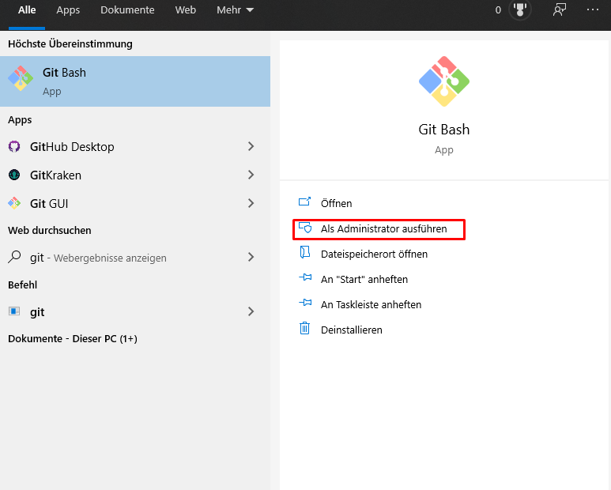
- Generate keys > ssh-keygen -t rsa -b 4096 -C "your_email@example.com" > ssh-keygen -t rsa -b 4096 -C jochen.p.hollich@gmail.com
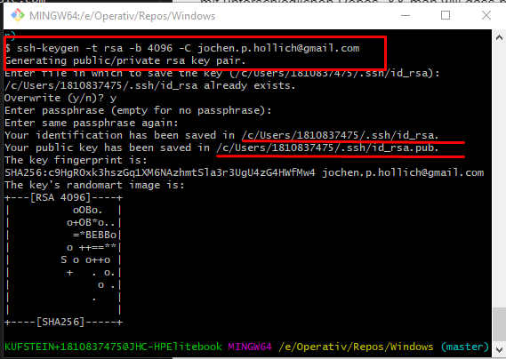
- Check ob bereits SSH-Einträge hinterlegt sind
Einschalten des SSH-Agents im GIt 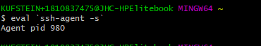
Sicherstellen das der SSH-Agent läuft, indem man ihn manuell startet:
Hier eine Darstellung wenn der Agent NICHT läuft: 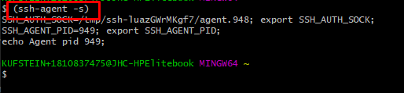
hinzufügen des Private-Keys in die Client-Config vom Github-SSH-Agent
ssh-add C:/Users/1810837475/.ssh/id_rsa 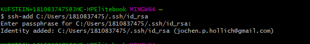
- Hinzufügen des Public Keys zu dem Github-Repo via Webinterface
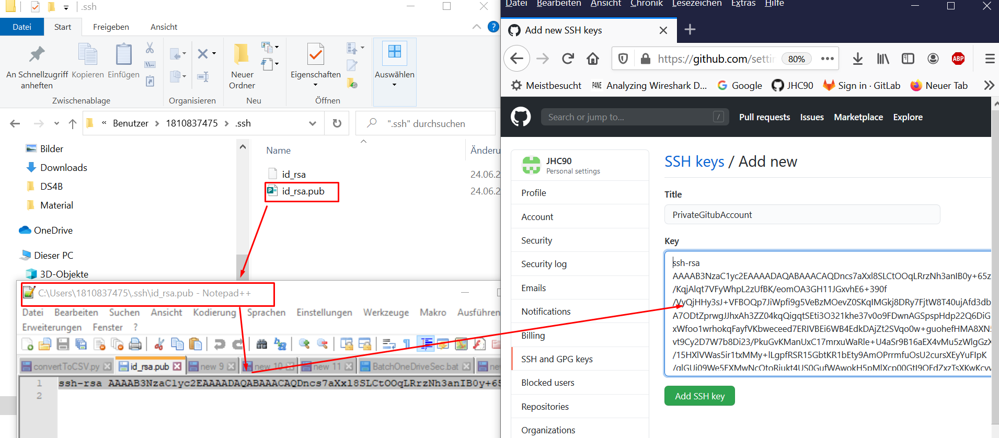
Speicher des ssh-Passwortes, sodass nicht immer danach nachgefragt wird beim push / pull
eval `ssh-agent -s` ssh-add ~/.ssh/*_rsa 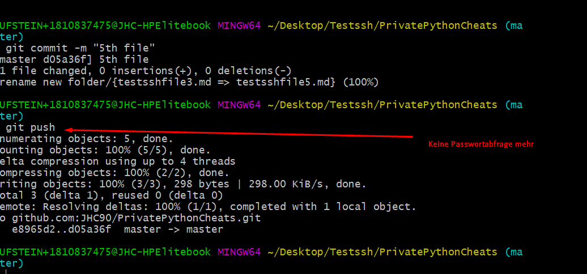
Nach Stand von 24.06.2020 geht das aber nur auf einer Maschine und nicht auf X-Maschinen gleichzeitig =>
Github und Gitlab-Account auf einer Maschine
Erstelle Schlüsselpaar für zweiten Account(bisher hatte ich den Github-Account, nun kommt der Gitlab-Account)
ssh-keygen -t rsa -C 1810837475@stud.fh-kufstein.ac.at -f C:/Users/1810837475/.ssh/id_rsid_gitlab
Füge Private-Key wieder dem lokalen git hinzu
ssh-add C:/Users/1810837475/.ssh/id_rsid_gitlab eval `ssh-agent -s` ssh-add ~/.ssh/*gitlab
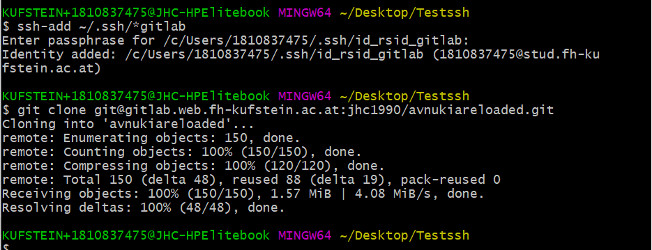
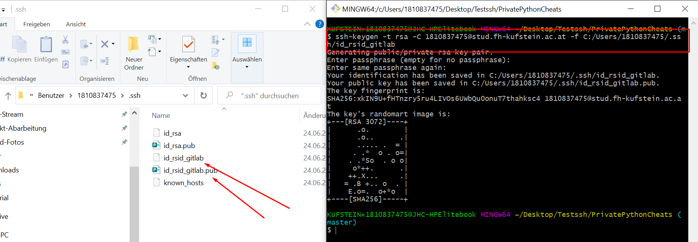
Füge Public Key wieder dem Remote Account hinzu
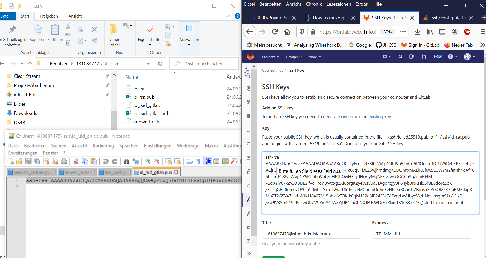
beim Versuch eines entsprechenden Clones vom Gitlab erhalte ich folgende Fehlermeldung: 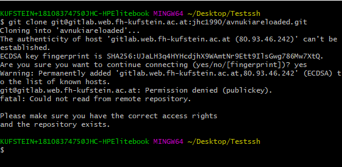
Speichern mehrere SSH-Accounts und deren Zugangsdaten
Ziel: Ich versuche lediglich mit dem Command
git push
auf der CLI ebene ohne eine weitere Anmeldung direkt in das jeweilige Repo des jeweiligen git-Servers(egal ob gitlab oder github) zu pushen
Editiere das Config-File des SSH-Agents liegt in Windows unter folgendem Link
C:\Program Files\Git\etc\ssh 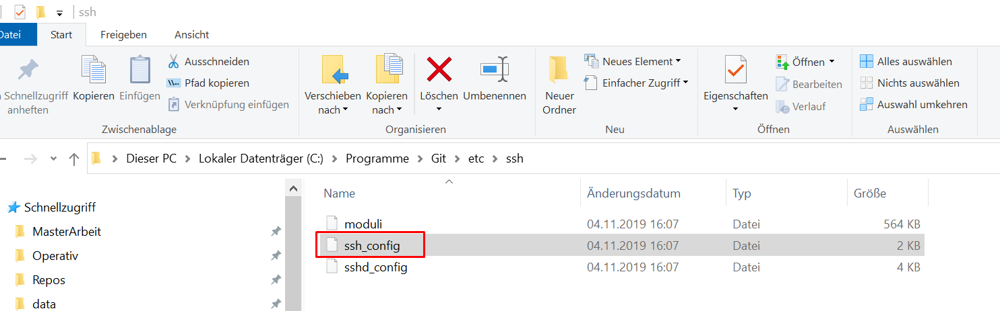
Füge in die Datei folgenden Block ein // achtung alles gefolgt von jeweils "host" ist eigentlich mit einem tab eingezogen
\# private gitlab account Host github.com HostName github.com User JHC90 IdentityFile C:/Users/1810837475/.ssh/id_rsa \# Work gitlab account Host gitlab.com HostName gitlab.web.fh-kufstein.ac.at User jhc1990 IdentityFile C:/Users/1810837475/.ssh/id_rsid_gitlab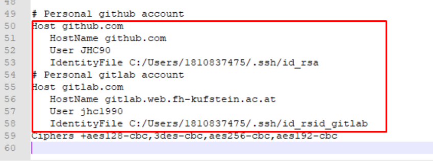
- Zuletzt muss nun noch der Autostart der Bash modifziert werden: Checkout Tutorial
Quellen
Test
- push ins Gitlab
- push ins Github
- Neustart git Client
- push ins Gitlab
- push ins Github